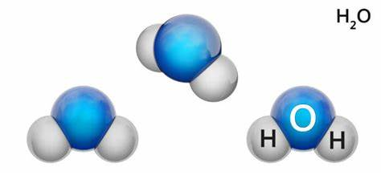

Tipos de água
água de coco:
O que é água de coco? A água de coco é um líquido de sabor adocicado presente no interior do coco. A bebida é muito refrescante e de baixa caloria, ou seja, 100 ml do suco contém 22 kcal. Este isotônico natural é rico em nutrientes como sódio, potássio, fósforo, cálcio, magnésio, vitamina C e do complexo B (B1, B2 e B5).
água salgada:
A água salgada é aquela rica em sais dissolvidos, principalmente o cloreto de sódio. Esse tipo de água é encontrado nos mares e oceanos e compõe cerca de 97,5% de todo o total de água existente na Terra.
água doce:
Encontrada na natureza, em que não ocorre a presença de sal. É a água própria para o consumo (desde que seja tratada) dos seres humanos e animais. A água doce é também utilizada na agricultura. Apenas cerca de 2,5% da água encontrada em nosso planeta é doce
água mineral:
Água mineral é a água que tem origem em fontes naturais ou artificiais e que possui componentes químicos adicionados, como sais, compostos de enxofre e gases que já vêm dissolvidas na água, portanto são invisíveis a olho nu. Toda água mineral, por mais pura que seja, possui uma certa quantidade de sais.
água destilada:
Água destilada se trata da água em seu estado mais puro. Ou seja, é a água que não contém nenhum tipo de substância adicionada a ela. A Água destilada é obtida por meio de um processo que se chama destilação. Consumo da água destilada. Embora a água destilada esteja na sua forma
A ligação quimica do elemento da água é feita entre H-O-H

Voltar